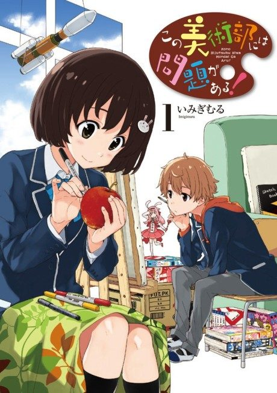

This Art Club Has a Problem!
この美術部には問題がある!
The anime takes the story to Not checked.
6.9AniList score
—Animeter, no votes yet
12episodes
Anime finished. Where does the story pick up?
StatusNot checked yet
We haven't checked where the anime ends in the manga yet. The manga is still running.